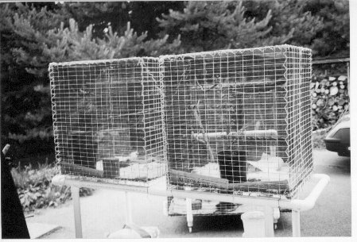
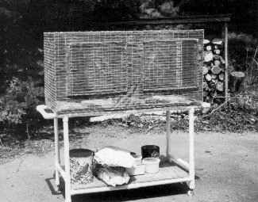
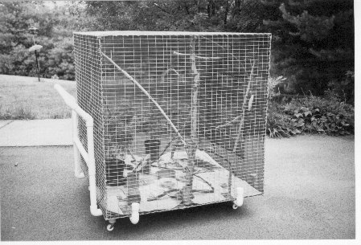

Roll-around carts or gurneys tend to come in two varieties: a. cheap, short-lived, and wobbly, or b. strong, durable, and expensive. Commercial grade good units run well over $100 and often over $200. The $20 to $50 units rarely last more than a year or so before the wheels go, the metal rusts, or something breaks under the loads we put on them.
The following notes describe some gurneys we designed and built for a special purpose: to hold Jean's wild bird rehabilitation cages. However, the general principles of the two major designs are applicable and adaptable to a wide variety of uses. So I am summarizing the thinking that went into them. Since they are not precisely an "antenna item," I am placing these notes in the first catch-all category of the index.
The drawings bear the initials "J. R." for Jean, since we designed the gurneys to hold a number of her cages. Our object, in part, was to elevate the cages so that there would be no stooping over to feed and care for orphaned and injured birds. However, we also wanted to be able to roll the cages into the sunlight on warm, good weather days and then to roll them back into the shop where the birds spent their time protected from bad weather and chill.
Because showers and other water are a way of life in bird rehabilitation, we also wanted the gurneys to be weather proof. Hence, except for the casters, there is almost no hardware in the gurneys--only Schedule 40 PVC (1.25" nominal diameter). As well, there are no openings into the PVC pipes, so the interior of the structure remains as dry as the day of assembly.
The key to making a PVC gurney is to collect many fixtures to go with the pipe itself. Ls handle the outside corners. Ts handle 3-way junctions for surfaces. Where you must go in a pair of directions, then one direction must be higher than the other. In a special gurney, we used Xs or cross junctions, along with a pair of 45-degree couplers. Of course, end caps are necessary for the leg bottoms. Before we finish, I shall show how we solved the challenge of applying caster to the end caps.
The "Care Cage Gurneys 1-3" figure shows the piping and coupling layout for the most basic gurney. I have built several of these units in various sizes to handle different cage needs. As we look at the layout, we shall also discover why these units are adaptable to other uses.
The first thing to note is that many coupling, especially on the legs, abut each other. We handle this with a short length of PVC cemented into both couplings, using a length that the couplings totally hide. Incidentally, the double thickness of the coupling and the linking pipe piece makes an exceptionally strong joint. Of course, joint quality depends partly on our use of the right cleaner and cement.
Note also that a number of the adjacent Ts are at right angles to each other. My technique for making such joints is simple. Around the shop, I have pre-located a number of good right angles, for example, the floor and workbench legs. I insert dry a length of pipe in each direction. When I cement the joint, I quickly press the extensions against the right angle structure. It only takes a few seconds for PVC cement to weld the junction into a whole, so pre-planning where to go and what to do to establish a good right angle is essential. When cutting pipe lengths, remember to measure the amount of insertion length for each coupling so that you end up with the correct final dimensions.
Since the cages did not require a top surface (we used cable ties to secure the wire cages to the perimeter PVC), the structure is open with only a single cross member to keep the lengths of pipe at about 2' or under. This length is very sturdy. The bottom shelf is another matter, so you might give some preliminary thought on how you wish to use the area. We have used a variety of techniques to make the bottom area into storage space for rehabbing supplies, unused transportation cages, and various kinds of seeds for the large variety of birds that Jean took in. In one case, I took a scrap sheet of plywood--it happened to be 1/2" thick, but 3/8" thick stock would be very adequate--and by cutting notches in the corners for the legs, fit it into the lower space as a shelf. This option did not require any hardware, since the legs locked it into place.
On another version, I used some scrap 3/8" plywood that did not cover the entire space. However, a pair of small sheets, side by side, filled the area. These sheets required stainless steel (non-rusting) sheet metal screw to hold the shelf in place. You may as easily use coated steel or aluminum mesh or other shelving materials. However, be sure that all metal and hardware is non-rusting. As well, you may apply any of these ideas to the top level. In fact, you may wish to look at the stock of plastic bins available at Walmart, K-mart, etc. There are a number of very large units intended for under-bed storage. Hence, they have walls only about 6" high--a combination that makes a good unit for either the upper or lower level. Use a minimum number of sheet metal screws into the PVC rails to fix them in place.

The photograph to the left shows a 2-cage unit. (Yes, although almost invisible, there are birds in the cages. Those unfamiliar with wild bird rehabilitation should know that it requires a federal license to hold migratory songbirds in a cage, and then only for a limited period of rehabilitation. Many states--such as Tennessee--also require state licensure of facilities. However, state laws tend to be quite variable from state to state, with differing assigned jurisdictions, as well. In general, capturing native species of migratory song birds without such a license and purpose happens to be against the law. So if you are thinking of making your favorite songbird into a pet, please don't.) The objects in the cages are materials that Jean added as enrichments for the birds, each designed from her extensive observations of birds in the wild to be something that would get orphaned nestlings used to the typical habitat they would one day find when they were released.
Note that the top level of the gurney extends a few inches beyond the end legs. These extensions make convenient handles for rolling the gurney around. The amount of extension is a function of what makes a comfortable grip in your own application.

The next photo to the right shows the double-length cage that Jean designed and had built for her work. The cage is long enough so that very small song birds--such as chickadees, titmice, wrens, and sparrows-- can get some end-to-end flight exercise as a preliminary to being moved into flight cages or an aviary. During the peak of orphan nestling season (about April through August in Tennessee), the numbers of birds might increase to a load of 50. In these times, the long cage's center divider would roll into place, making 2 cages out of one (for species who by virtue of age difference or natural feistiness did not get along together).
The photo also shows the use of the lower shelf as a supply storage area. The bottom lining in the cage(s) above provides a natural umbrella over the shelf, so a plywood shelf is sufficient. However, if you use plastic or other materials for a bottom shelf, consider the following idea. Find containers with low walls but the largest areas that will fit in the space. Fasten these down to the rails. Then, for parts, provisions, or other items stored, let each item have its own plastic container that fits into the big container. These sub-containers should mesh together to make maximum use of the space and may have higher walls (that is, be deeper) than the low-walled retaining containers. There are a myriad of plastic containers available at very low prices, and the present-day quality of the plastic materials has reached the stage of being as durable as the basic frame.
The next basic design for a gurney emerged from the need to hold and move a 4' by 4' by 4' small flight cage. Actually, the cage served as a basic (but not final) flight cage for very small species and as a rehabilitation cage for large species, such as quail, doves, and killdeer. Such a cage is ungainly to handle, so we designed a special gurney not only to reorient it indoors, but as well to wheel it outdoors.
The key features of this gurney are the use of cross couplings or Xs, the use of short legs, the use of capped uprights to prevent the cage from sliding, and the provision for a handle for rolling the cage about. The crosses provide a rigid basic structure. The short legs provide a home for the casters, about which we shall say more soon. The capped uprights are sized to the cage, and the caps make the entire structure water- tight.
The handle section consists of upright PVC lengths, with two cross bars, one about half way up and the other forming the handle. The handle is offset from the cage wall by the use of a pair of 45-degree couplings. In this application, the handle assembly will show some flex, but not enough to harm anything unless you load the gurney with a refrigerator.

The photograph shows the gurney in use with its cage, filled with perching limbs and other enrichments to prepare the recovering or growing bird(s) for eventual freedom. (With a rehabber in the household, pruning limbs was less a matter of cleaning up trees than it was a gathering of perches for bird who ranged in size from 4" to 15" long.)
Although this style of gurney may seem less apt to other uses, consider it as a potential base for a complete station on wheels. You may design the framework for holding the equipment and then redesign the gurney to hold the framework. Now you have a completely mobile station--or test lab, or whatever. (No, these gurneys are not designed for installing a small engine to make them self-propelled.)
I have mentioned casters for the gurneys in several places. There are two things to note about them: quality and mounting.
First, use only high quality casters. I learned from experience that the cheapest caster wheels will last only a very short time on concrete and asphalt. They may seem strong and economical in the hardware store, but they will amount to money lost when placed in use. Obtain high quality casters with wheels designed to stand the stresses, grinding, and wear of rough surfaces. You will discover that these units also have better bearings and hence roll more smoothly from day 1.
The sketch introduces the subject of mounting casters. The end caps for PVC are too small for using the type of caster that mounts on a plate with small bolts. Since you may not be able to obtain flat-top caps, but have to settle for rounded types, you likely cannot even mount a plate onto the cap at all.
My solution was to use insertion casters that come with a housing that press fits into a hole. However, the hole must be in solid material for the length of the caster housing and the caster shaft.
My procedure was to cement together the end cap and the length of pipe necessary to join the cap to the leg assembly--ordinarily a T that abutted the end cap. I used auto-repair epoxy (Bondo) to fill the cap and linking pipe. I discovered through experience that the hole that I eventually drilled would hold the caster housing or shell better if I placed fiberglass repair cloth or simple wood chunks into the hole as I filled it with epoxy. Be certain to use the correct proportions of the two parts of the epoxy and to mix them thoroughly to ensure that the filling cures. Give the filled assembly a couple of days to cure before drilling, since the epoxy is in a confined space.
When fully cured, drill the leg end from the cap side to fit the caster shell tightly--but not so tightly as to prevent the caster from snapping in place. Do not drill all of the way through the epoxy fill. Tap home the shell and then insert the caster. If a caster housing later wants to begin to come loose, you can dribble some epoxy into the hole, let it cure, and then re-drill the shell hole.
If something breaks--and it never did for us--you can always effect a repair with some PVC couplings and short pipe lengths.
The cost of these gurneys was about $40-$50 each, with nearly half that cost going to casters and perhaps a fourth to left-over couplings and pipe. That is why I have some yard benches made from PVC frames and treated lumber, not to mention a 10-meter beam boom. Yes, you can find small gurneys and roll-around carts for a bit less, but not ones of the size and durability of these units.
Besides, the challenge of making something that custom fit the need was worth the investment. I have elsewhere stated that PVC is tinker-toys for adults, and so it is. A pipe structure from PVC, along with all of the fittings, is adaptable to many needs. Perhaps these gurneys will inspire you to even better structures for your own home, garden, shop, radio, antenna, and other needs. You can, for example, take the upright retainers from the second style of gurney and apply them to the upper and lower levels of the first gurney type. In that way, you might do away with fasteners altogether for holding in place the basic shelving trays. Hmmm. . . Now that is an interesting idea. I wonder how many couplings and how much pipe I have around the shop to try that.
Updated 12-09-2002. © L. B. Cebik, W4RNL. Data may be used for personal purposes, but may not be reproduced for publication in print or any other medium without permission of the author.